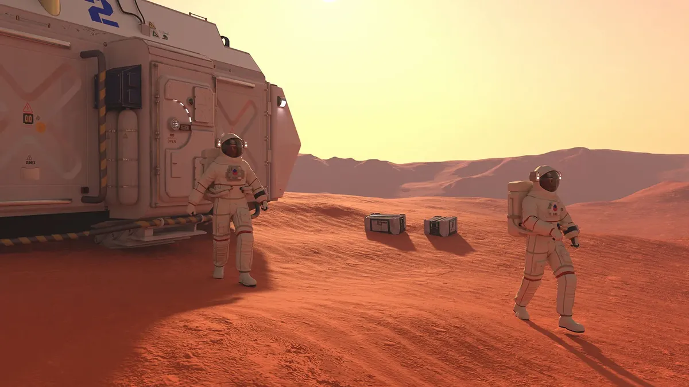

Space Exploration 2.0: The Race to Mars and Beyond
Humanity's quest to explore space is entering a new era, driven by both government space agencies and private companies. This article discusses the future of space exploration, focusing on missions to Mars, the Moon, and beyond. It covers the technological advancements enabling deep space travel, the role of companies like SpaceX and Blue Origin, and the potential for establishing human colonies on other planets. The article also examines the challenges of long-duration space missions, such as life support systems, radiation exposure, and the psychological effects on astronauts.
Introduction
Space exploration is entering a new era, driven by both government space agencies and private companies. The ambition to explore Mars, establish a human presence on the Moon, and venture further into the solar system is reshaping our approach to space exploration. This article examines the current state of space exploration, the key players involved, and the future prospects of humanity's quest to explore the cosmos.
The New Space Race
The new space race is characterized by increased collaboration between government space agencies and private companies. NASA, the European Space Agency (ESA), and other national space agencies are working alongside private companies like SpaceX, Blue Origin, and Boeing to achieve ambitious goals. SpaceX, founded by Elon Musk, is leading the charge with its reusable Falcon rockets and the development of the Starship spacecraft, which is designed for deep-space missions and interplanetary travel. Blue Origin, founded by Jeff Bezos, is focused on developing reusable rockets and space tourism.
Mars Exploration
One of the primary goals of contemporary space exploration is to explore Mars and eventually establish a human presence on the Red Planet. NASA's Perseverance rover, which landed on Mars in 2021, is conducting scientific research and searching for signs of past life. SpaceX's Starship is designed to transport humans to Mars and support long-term colonization efforts. The challenges of Mars exploration include the harsh environment, radiation exposure, and the need for sustainable life support systems.
Lunar Exploration
Returning to the Moon is a key objective for space agencies and private companies alike. NASA's Artemis program aims to land astronauts on the lunar surface by the mid-2020s and establish a sustainable presence through the Lunar Gateway and lunar base camps. The Moon serves as a proving ground for technologies and techniques that will be essential for future missions to Mars and beyond. Additionally, private companies are exploring lunar mining opportunities and developing technologies to support lunar exploration.
The Future of Space Exploration
The future of space exploration is marked by ambitious goals and innovative technologies. Beyond Mars and the Moon, there are plans to explore asteroids, conduct missions to outer planets, and even travel to other star systems. The development of advanced propulsion systems, such as nuclear thermal and ion propulsion, will be crucial for reaching these distant destinations. Additionally, international cooperation and the development of sustainable technologies will play a vital role in the long-term success of space exploration.
Challenges and Considerations
Space exploration faces several challenges, including the high cost of missions, the need for international collaboration, and the risks associated with human spaceflight. Ensuring the safety of astronauts, developing reliable life support systems, and addressing the technical and financial challenges of space missions are essential for the success of future endeavors.
In conclusion, space exploration is entering an exciting new phase, with unprecedented opportunities for discovery and advancement. By leveraging the capabilities of both government and private sector efforts, humanity is poised to explore new frontiers and make significant strides in our understanding of the universe.